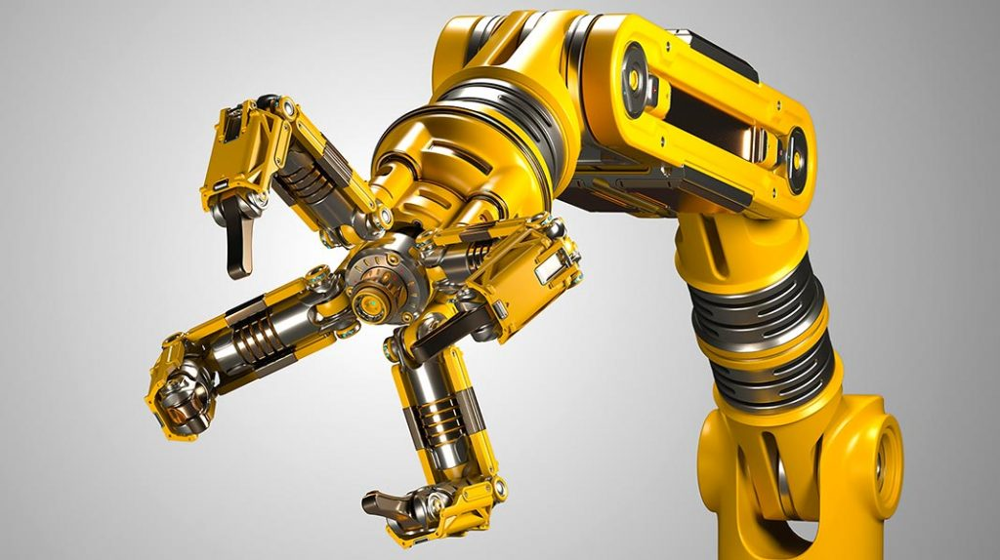

SISTEMA CYBER-FISICO
Es un sistema hecho a base de algoritmos. Para poder ejecutarse es necesario que se completen paso a paso una determinada cantidad de instrucciones. Está íntimamente relacionado con el campo de la informática y el Internet.

TIPOS DE SISTEMAS CIBERNETICOS:Los sistemas cibernéticos pueden ser de muchos tipos según las tecnologías o tipos de elementos e interacciones involucrados: físicos (mecánicos, hidráulicos, neumáticos, electrónicos), químicos, biológicos, industriales, psicológicos, sociales, empresariales, políticos, militares. |
Los sistemas cibernéticos se pueden clasificar de diversas formas, de acuerdo a los elementos involucrados y el tipo de tecnología o sistema del que se trate, ejemplos: sistemas cibernéticos en biología, sistemas cibernéticos en ecología, etc. |
SISTEMA CIBERNETICO DE CONTROLEs un sistema enfocado a la regulación de la gestión y es usado por seres vivos, organizaciones y máquinas. El propósito de los sistemas de control es minimizar la cantidad de errores de un sistema para obtener resultados óptimos. Son los más usados actualmente a nivel industrial, ya que casi todos los aparatos lo utilizan: computadoras, móviles, calentadores, lavadoras, etc. |
 |
|---|
|
SISTEMA CYBER-FISICOEs un sistema hecho a base de algoritmos. Para poder ejecutarse es necesario que se completen paso a paso una determinada cantidad de instrucciones. Está íntimamente relacionado con el campo de la informática y el Internet. |
|---|
*SISTEMAS TRIVIALESSon sistemas que no cambian su comportamiento a pesar de la información que puedan recibir y no guardan información. Son sistemas predecibles, ya que no modifican sus procedimientos. *SISTEMAS NO TRIVIALESAl contrario de los anteriores, estos sistemas decodifican y codifican la información recibida y son capaces de alterar sus procedimientos en base a estos datos.
|
SISTEMAS CERRADOSSon aquellos que no interactúan de ninguna forma con el entorno, sus piezas y elementos funcionan independientemente de los estímulos exteriores. Un reloj puede ser un ejemplo de este tipo de sistemas. |
SISTEMAS AISLADOSse entiende por sistema aislado a aquellos sistemas en los cuales no se produce intercambio ni de materia ni de energía con el entorno, debido a la acción de algún tipo de barreras que permiten la conservación de los recursos del sistema, a la vez que impiden el ingreso de recursos del afuera. |
SISTEMAS ABIERTOSInteractúan permanentemente con el entorno, intercambiando información o energía con él, e influenciando o siendo influenciados. El sistema abierto se adapta y se autorregula a las condiciones existentes mediante los datos que recibe. Un ejemplo de sistema abierto puede ser una empresa. |
|---|
El FUTURO de las computadoras se dirige hacia la inteligencia artificial, con sistemas informáticos cada vez más complejos
Si bien los avances en cibernética son muy variados e interesantes, actualmente en los últimos años se ha logrado conectar su sistema nervioso a una máquina e, incluso, ha mandado la información de los impulsos nerviosos a través de una red de computadoras para acabar conectando en otro sistema nervioso humano o conectado en un brazo robótico que puede ser controlado a distancia con el simple movimiento de la mano.
Así pues, la cibernética educativa permite al docente comprender que la educación que se brinda al profesional. Al ser un sistema, debe de ser tratado en su fundamento como tal. Debe ser estudiado en sus partes y en su totalidad, y debe ser comprendido en sus relaciones con otros sistemas, en este caso, el laboral.